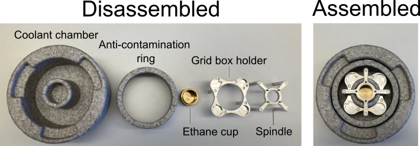

Vitrobot¶
Note
Note: Taken from https://www.dropbox.com/sh/rtss2c5qblmurmf/AABqRvU3X9eIrM7wiR3a9Jg1a?dl=0&preview=Vitrobot.pdf Review and Update
Warning
YOU MUST BE TRAINED BY AN EXPERIENCED MEMBER OF THE EM GROUP BEFORE YOU CAN BOOK AND USE THE VITROBOT IF YOU ARE NOT SURE HOW TO DO SOMETHING PLEASE ASK FOR ADVICE ALWAYS WEAR PROTECTIVE GLASSES!
Starting¶
Turn on the Vitrobot using the main power switch located at the rear panel
Replace filter paper (16 blots max)
It is convenient to replace it when the central rod is up, for example, when you start the Vitrobot
Use gloves and tweezers to avoid contaminating the paper
Make sure not to bend the paper in the box when you take it out or close the box
Clip with circular clipping rings: the concave side of the paper is put against the blot pads (do not apply excessive pressure on the blotting pads)
If using the humidifier fill it up with dH20
Pull in the humidifier cable so it doesn’t get stuck (don’t disconnect)
Clip on the humidifier with the bayonette clip-on lock
Fill with 60 mL of dH20 with syringe (40 mL if top-up requested by the Vitrobot software)
Remove air with syringe suction
Set up temperature and humidity parameters in the Console window
Note: increasing the humidity will affect the temperature in the chamber, and for critical experiment an additional time for thermal equilibration might be required (see the manual for details)
Set up parameters in the Options window
Recommended options in Miscellaneous box:
Humidifier off during sample processing
Skip grid transfer
Specify the following in Process Parameters in Options window: * Blot Total – the number of blottings * Blot time - the time for each individual blot * Blot force - force of the blotpads applied onto the grid * Wait time - time before blotting * Drain time - time between blotting and plunge freezing * Skip sample application: if sample already on grid (e.g. Cells)
Save the program (you can also Load previously saved program from a list)
You can also Add or a Delete step(s) for sequential blotting and determine parameters
Test the program before you start working
Leave the Vitrobot to equilibrate for 20-30 min
Material Preparation¶
Glow discharge grids (more than required)
Prepare hairdryer
Prepare 5 L LN2 dewar, small dewar with Falcon tubes, small thermos flask for topping up the coolant chamber with filtered LN2
Prepare Falcon tubes, grid boxes and screwdrivers or rods
- Prepare the coolant container:
Insert brass coloured inner cup, grid box holder, the spindle/spider and anti-contamination ring (figure 1)
Fill up the inner (brass) and outer chamber (styrofoam) with LN2 and let it settle under a glass cupola (to prevent contamination from humidity in the air)
- Wait until LN2 evaporates from the brass coloured cup (should take around 5 minutes), top up the outer chamber if necessary
- 
- Condense ethane:
WEAR GLASSES AND GLOVES, ALWAYS WORK IN THE FUME HOOD, make sure that all LN2 have evaporated from the ethane cup
Open the valve 1, and valve 3 on the on the ethane bottle (figure 2)
Carefully open valve 2 of the ethane bottle, aim for your skin on the wrist above you gloved hand. When you can feel a gentle stream of gas on your skin, the inital stream of gas i sufficient (on the manometer the pressure should be around 1). Better too slow than too fast!
Close valve 2. Put the pipette tip of the out-flow at the bottom of the ethane cup, quickly turn back the flow of ethane by turning valve 2 back to the position of the gentle stream.
Start filling the ethane cup with ethane. After 10-30 seconds the sound of the ethane should start to zizzle (as a result of liquid ethane forming)
Gently fill up the cup with ethane with one hand ond valve 2 to increase/decrease gas-flow along the way
When the ethane is ~1 mm away from the spider/spindle, quickly remove the tip of the ethane-tube as you close valve 2
- Cover the coolant container with a glass cupla again and wait for a white ethane crust to form around the edges of the ethane cup
In the meantime close valve 1 of the ethane bottle, gently empty the gas left in the tube inside the fume hood by opening valve 2
Close valve 2 and valve 3 of the ethane bottle
Remove the the cooling spindle/spider – if the ethane has frozen more than expected: use flat end of the large tweezers or a spare brass coloured cup to thaw the top quickly
Top up the LN2 as required
Place your marked grid box(es) onto the grid box holder (TEST them!)
Transfer the coolant chamber and LN2 thermos flask next to the Vitrobot
- (Condense ethane with a NanoSoft ethane-condenser):
WEAR GLASSES AND GLOVES, ALWAYS WORK IN THE FUME HOOD, make sure that all LN2 have evaporated from the ethane cup
Follow the instructions on the following video: https://youtu.be/J_M-IUlPuNM
{kind=link}
{kind=link}
Vitrobot Cycle¶
- Press: Place a new grid
Pick up a glow–discharged grid with the Vitrobot tweezers
Make sure that the black clamping ring of the tweezers is fixed at the first notch (counting from top of the tweezers – not from the grid!) and that the grid doesn’t fall off in vertical position
Mount the tweezers (spring forward - unless blotting was optimised with the wrong RHS position)
Check if the grid is centred on the rod
- Press: Start process and the tweezers will be taken into the climate chamber*
- If Autoraise Ethanelift is on, the cooling chamber will automatically be lifted; if not click next button or use the foot pedal if this is enabled
If something goes wrong, just press: Place new grid
- Press: Continue
- The tweezers will be lowered down to apply the sample (typically 3 uL, but this may vary)
If Skip application is on, blotting will start
- Press: Continue to move on to blotting and plunge
As the coolant chamber is lowering down, top it up with LN2 to the level above the grid boxes
- Carfully disconnect the tweezers from the central axis
(It may be helpful to lift the coolant container with the tweezers still submerged in ethane from the support ring and position it next to Vitrobot)
Transfer the grid into LN2 and then into the grid box
Remove tweezers, dry them and pickup a new grid
Press: Place new grid to repeat the process and freeze another sample
Shutting down¶
Take the tweezers off
Press: exit and confirm that the tweezers were removed
Switch off the vitrobot by turning the flick-button on the back of it
Remove and empty the humidifier
Pour the water out of the inner chamber of the humidifier and remove the remaining water (in the inner chamber) from the bottom with the syringe
Additionaly¶
At 99% humidity the sample does not concentrate by evaporation
Note that blotting parameters (time and number of blottings) determine the initial thickness of the thin film, further thinning will occur during the drain time
If temperature is important, keep samples in a water bath prior to loading
For low viscosity of samples sequential quick blottings are recommended; for high viscosity sample - longer blotting time
Consider using low temperature (4 C) and no humidifier: after 30 min there will be ~90% humidity in the chamber without any steam or condensation